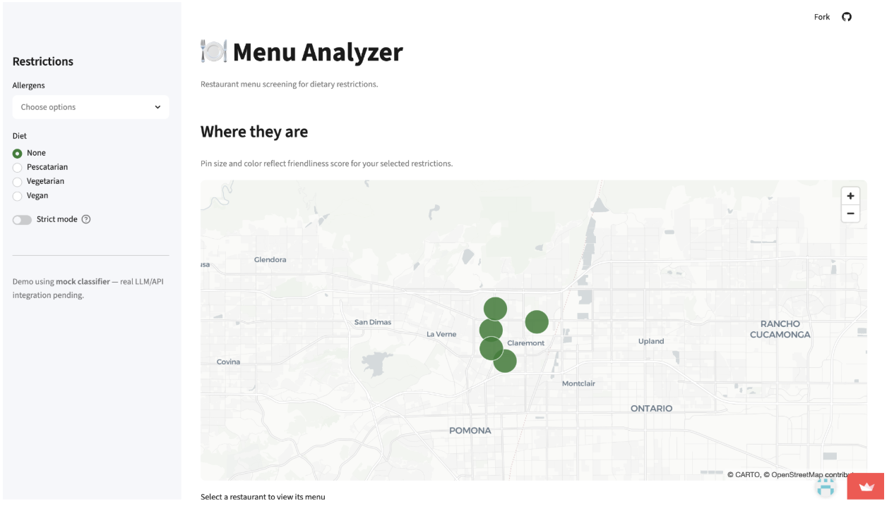
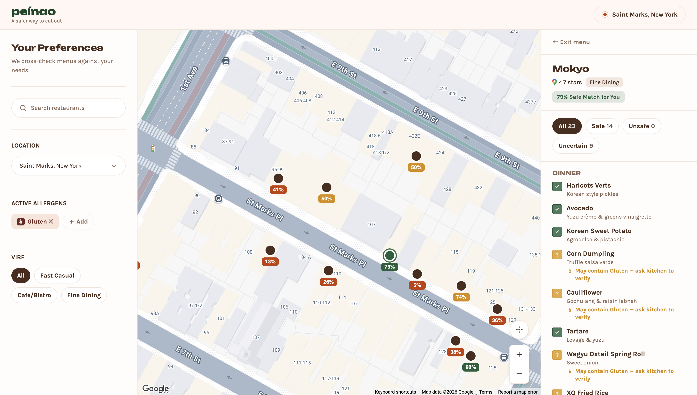
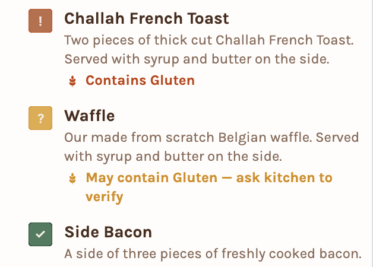

When my friends and I would go out to eat, we never went to a Thai place, because we didn't know if they could accommodate peanut allergies. We always picked from the same narrow list of restaurants we already trusted, and I no longer wanted to do that. Peináo helps people with food allergies figure out which restaurants are actually safe for them, not just the small handful they already know are safe. It started as a small tool for Claremont Village and grew into a project covering St. Marks Place in New York, combining menu classification, allergen risk scoring, and Google reviews into one simple score per restaurant.
What I built
- Manually downloaded menus from restaurant websites and cleaned up the formatting so the LLM could parse them accurately
- Used the Google Maps API to pull in restaurant and location data
- Wrapped everything into a Streamlit app for a working demo
Biggest challenge
Data collection. Every restaurant formats its menu differently (PDFs, images, inconsistent naming, missing ingredients), so getting clean, usable data was harder than the classification itself. Manually collecting the data was unrealistic.

Once I understood what the tool actually needed to do well, I rebuilt it from scratch, this time scoped to every restaurant on St. Marks Place in the East Village.
Major tasks
- Collect data from every restaurant on St. Marks Place
- Build a classifier that reads menus and scores allergen risk per item
- Combine allergen safety with Google review scores into one blended rating
- Build a cleaner user interface
1. Sourcing Data
Created a Claude Agent that used skills with very tailored instructions to go and source the menus. In order, my agent would check official restaurant websites, then DoorDash and Uber Eats, then Yelp, then Google Maps images. Instead of asking the LLM one broad, unreliable question, I narrowed the prompt so each menu item returns a structured, consistent answer — far more reliable, and much easier to build a UI around.
2. Scoring
Each restaurant ends up with two scores: a peanut-safety score and a gluten-safety score, each blended with its Google review rating. Keeping it to two scores meant both could display side by side without cluttering the card — e.g. 7/10 (peanut) · 8/10 (gluten).
3. UI Implications
With only two allergen categories, the interface stayed simple. Instead of a long dropdown of restrictions, every restaurant card can show both scores at once, or let the user toggle between Peanut, Gluten, or Both.


- Data collection and scraping. Even with a clearer plan, getting consistent, structured data out of dozens of different restaurant menus was still the hardest part of the project.
- Tool exploration. I spent time exploring Zo Computer and a few other tools before realizing I was going down a rabbit hole, and had to consciously pull myself back to the core build.
- Lovable vs. Figma. Deciding between prototyping the UI in Figma versus building it directly in Lovable took some back and forth before I landed on the right workflow, since I had never done design before.
- Understanding what the AI is doing is key.
- Data quality is the real bottleneck.
- It's worth rebuilding from scratch.
- Accurate allergen information: Cross-check classifications against official restaurant health inspection data from the city.
- Better menu sourcing: Get direct access to a DoorDash API for more complete and up-to-date menu data, rather than relying on manual collection.
- User feedback: Use this to iteratively improve the site; when someone scores a restaurant for a given restriction, the app automatically adjusts that restaurant's scores.
This project started as a tool for Claremont Village restaurants and has since expanded to cover a real New York City neighborhood (St. Marks Place), reflecting a shift from a class project to something built for a live, denser food scene.